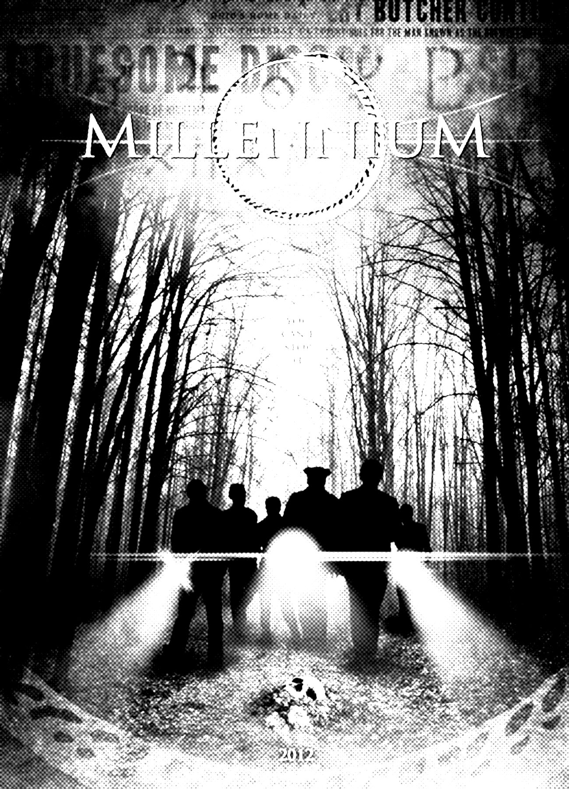
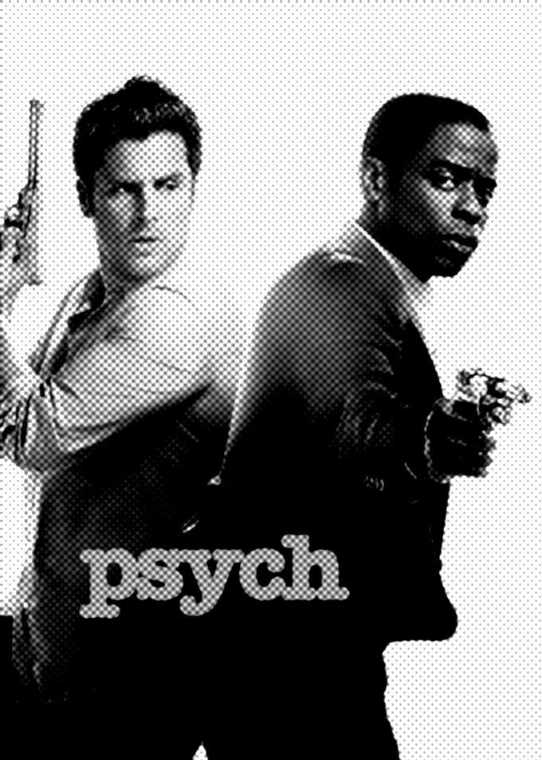
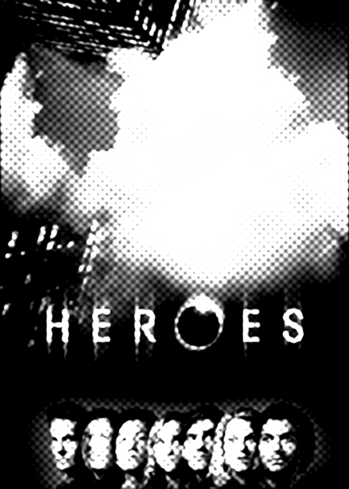
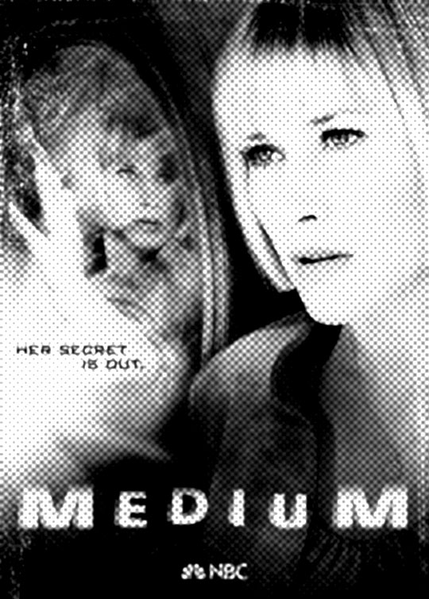
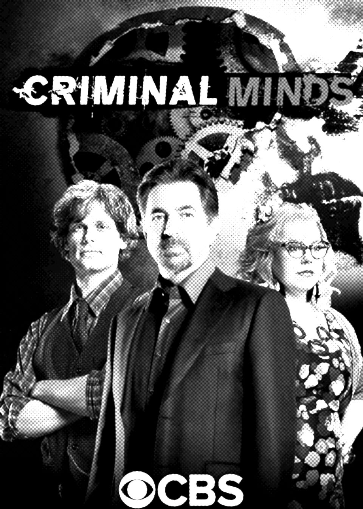
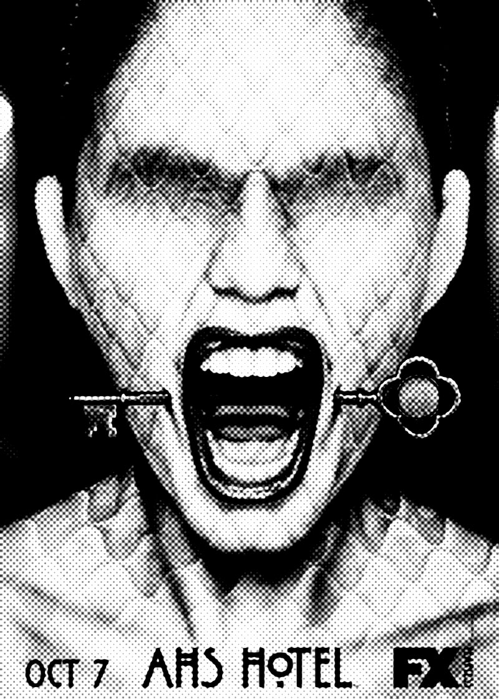
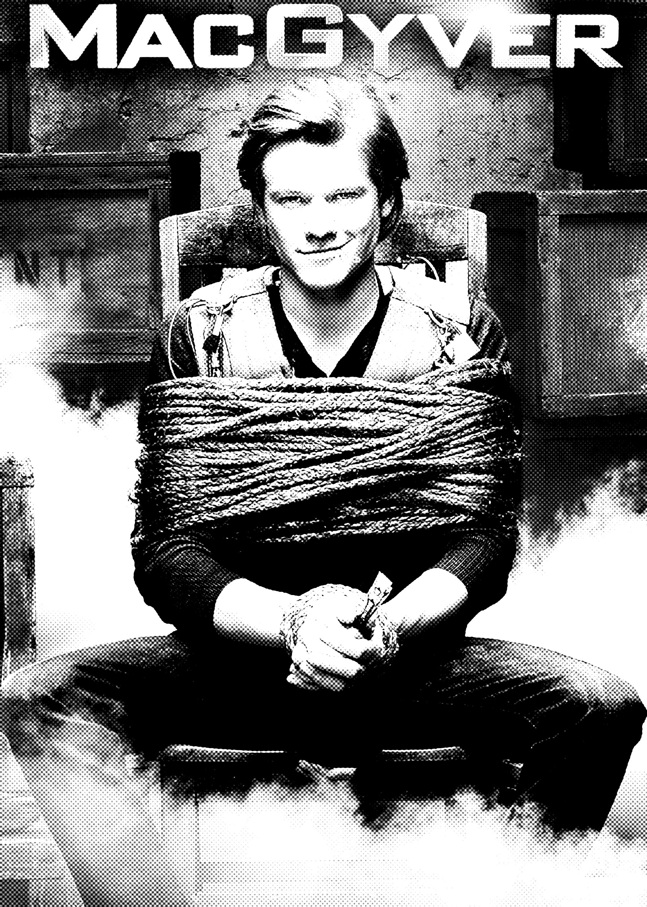
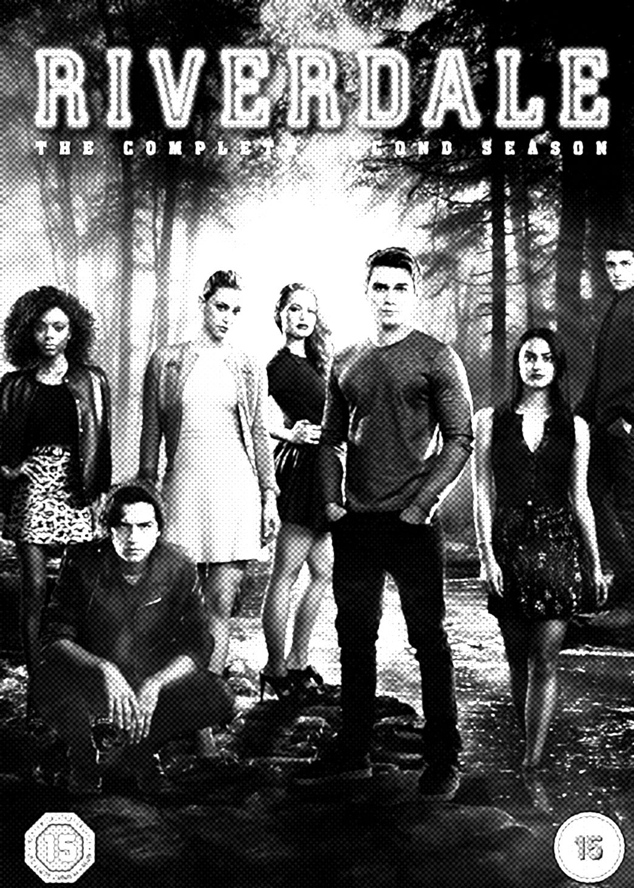

The season 2 episode of Nash Bridges, titled "Zodiac," has the inspectors following a copycat using the same methodologies as the original killer.

The Zodiac case forms the basis for "The Mikado," a second season installment of the television series Millennium. The episode, featuring a fictionalized version of the Zodiac Killer known as Avatar, was written by Michael R. Perry and first aired on February 6, 1998.[9]

The show Psych has a recurring serial killer/killers "Yin/Yang", whose crimes bear similarity to the Zodiac Killer's, played by Ally Sheedy.

The series Heroes character Sylar, portrayed by Zachary Quinto, is loosely based upon the Zodiac Killer. One suspect was allegedly given a "Zodiac" brand watch that had the same logo (a crossed circle) that the killer used to sign his letters. Also of note, before one alleged victim died, she was followed by a suspicious man wearing horn-rimmed glasses.

A Season 6 episode of Medium, entitled "The Medium is the Message," portrayed a killer called "The Libra Slayer" who showed a proclivity for symbols. His case was decades old, much like the Zodiac Killer's.

The Zodiac Killer is mentioned numerous times in Criminal Minds, a television program which follows a team of profilers at the FBI's Behavioral Analysis Unit. On January 18, 2012, the episode "True Genius" was aired, featuring a Zodiac Killer copycat active in the Bay Area. Recurring villain George Foyet, a.k.a. "The Boston Reaper", was heavily based on the Zodiac.

In the American Horror Story series, the Zodiac Killer is depicted as a masked figure and first appears as ghost in the American Horror Story: Hotel episode "Devil's Night," attending James Patrick March's dead serial killer party. In American Horror Story: Cult, the Zodiac Killer is suggested to be a member of Valerie Solanas' SCUM cult.

The "Magnifying Glass" episode of the MacGyver reboot (original air date 02/10/17) features the team tracking down a Zodiac Killer copycat.

The episode "Chapter Seventeen: The Town That Dreaded Sundown" from the second season of Riverdale features a Zodiac copycat killer called the "Black Hood" killer, who like Zodiac sends taunting letters and cryptograms.[10][11]